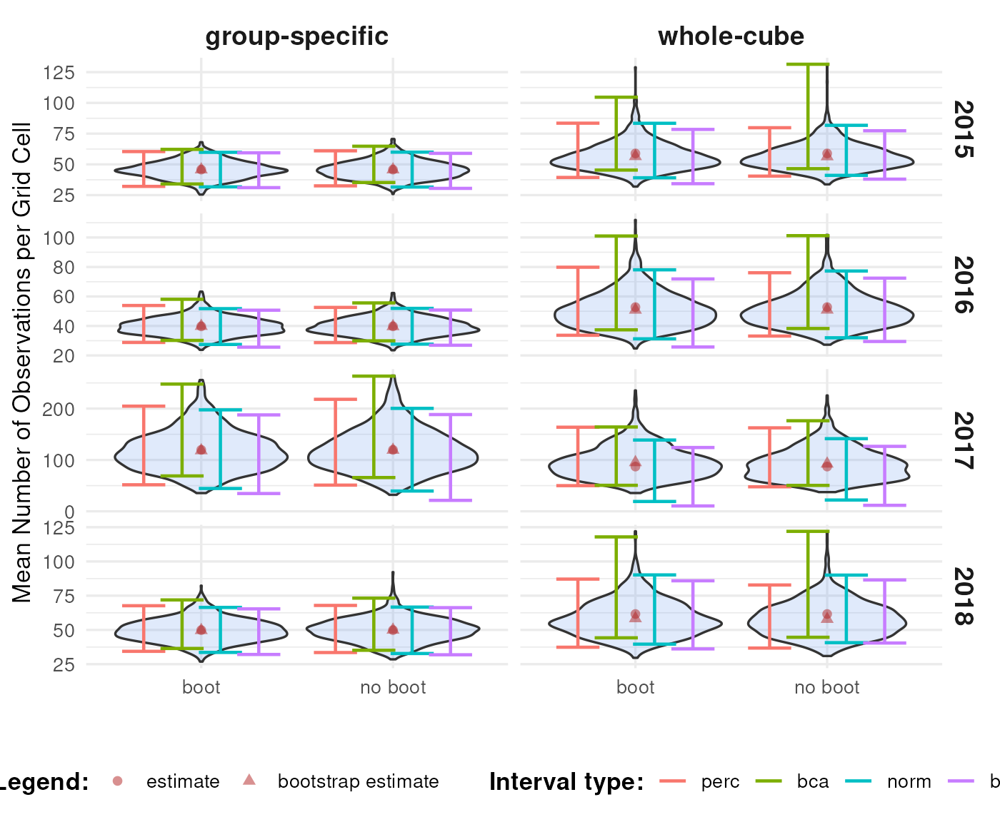
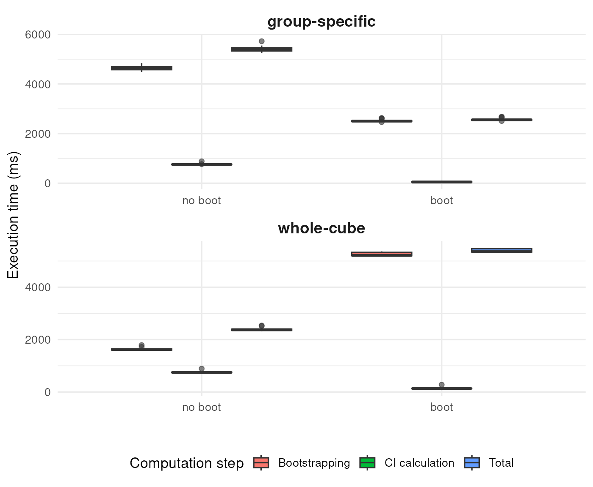

Whole-cube Bootstrap versus Group-specific Bootstrap
Source:vignettes/articles/whole-cube-versus-group-specific-bootstrap.Rmd
whole-cube-versus-group-specific-bootstrap.RmdIntroduction
When calculating biodiversity indicators from a cube, we often want confidence intervals (CIs) using bootstrapping. In dubicube, bootstrapping can be done in two ways:
- Whole-cube bootstrapping: resampling all rows in the cube, regardless of grouping.
- Group-specific bootstrapping: resampling rows only within a group of interest (e.g., a species, year, or habitat).
The choice between these two methods directly affects how confidence intervals should be interpreted:
- Other indicators combine information across groups (e.g., community richness, turnover, or multi-species metrics). These require whole-cube bootstrapping to preserve correlations.
- Some indicators are calculated independently per group (e.g., species-specific or year-specific metrics). For these, group-specific bootstrapping is usually more appropriate.
In this tutorial, we explain the differences, discuss the strengths and limitations of each method, and provide a worked example.
Methods
dubicube’s smart method
The smart option (method = "smart") is the default
behaviour of the bootstrap_cube() function. With this
option, dubicube automatically selects the most
appropriate bootstrap strategy based on:
The scope of the indicator Whether indicator values for each group are independent (group-specific) or depend on the full dataset (whole-cube). This is inferred by comparing indicator values computed on progressively smaller subsets of the data.
The presence of a reference group If a reference group is specified (
ref_groupnotNA), bootstrapping via the boot package is disabled, because reference-based indicators require explicit resampling logic.The number of grouping variables If more than one grouping variable is supplied, bootstrapping via the boot package is never used, even when
ref_group = NA. In this case,method = "smart"always resolves to a non-boot method (group_specificorwhole_cube), because multi-dimensional grouping is not compatible with thebootdelegation used internally.
If no reference group is used and exactly one grouping variable is supplied, dubicube may delegate bootstrapping to the boot package for efficiency and robustness.
| Scope of indicator calculation | Reference group used? | Number of grouping variables | Method chosen by method = "smart"
|
Uses boot package? |
|---|---|---|---|---|
| Group-specific | No | 1 | boot_group_specific |
yes |
| Whole cube | No | 1 | boot_whole_cube |
yes |
| Group-specific | Yes | any | group_specific |
no |
| Whole cube | Yes | any | whole_cube |
no |
| Group-specific | No | > 1 | group_specific |
no |
| Whole cube | No | > 1 | whole_cube |
no |
In practice, users rarely need to set the method
argument explicitly. The default method = "smart" reliably
selects an appropriate and valid bootstrap strategy. Explicitly setting
method is mainly useful for advanced workflows, debugging,
or methodological comparisons.
Whole-cube bootstrap
Definition: Resample all rows in the cube, regardless of species, year, or other grouping.
Advantages:
- Preserves correlations between groups (e.g., species co-occurrence, temporal dependencies).
- Appropriate for indicators that depend on multiple groups together (community-level metrics, multi-species diversity).
Disadvantages:
- Rare groups may end up with zero rows in some bootstrap replicates, leading to wider or undefined CIs.
- Variance for small groups may be inflated.
Use case examples:
- Community richness per site or habitat.
- Multi-species indicators (e.g., average occupancy across species).
- Temporal turnover indicators that rely on multiple years.
Implementation in dubicube
- Use
method = "whole_cube"in thebootstrap_cube()function.
bootstrap_mean_whole <- bootstrap_cube(
data_cube = processed_cube,
fun = mean_obs,
grouping_var = "year",
samples = 1000,
seed = 123,
method = "whole_cube"
)
#> [1] "Performing whole-cube bootstrap."
head(bootstrap_mean_whole)
#> sample year est_original rep_boot est_boot se_boot bias_boot
#> 1 1 2015 58.90686 49.74404 56.39463 10.38017 -2.512234
#> 2 2 2015 58.90686 54.63586 56.39463 10.38017 -2.512234
#> 3 3 2015 58.90686 38.12448 56.39463 10.38017 -2.512234
#> 4 4 2015 58.90686 47.90738 56.39463 10.38017 -2.512234
#> 5 5 2015 58.90686 53.01524 56.39463 10.38017 -2.512234
#> 6 6 2015 58.90686 45.90244 56.39463 10.38017 -2.512234Group-specific bootstrap
Definition: Subset the cube by the group of interest (e.g., species or year), then resample rows only within that group.
Advantages:
- Guarantees each replicate has rows for the group → stable CIs.
- Reflects within-group variability only.
Disadvantages:
- Ignores correlations with other groups.
- Variance may be slightly underestimated if the group’s presence is correlated with other groups.
Use case examples:
- Species-specific occupancy or habitat preference metrics.
- Year-specific indicators (e.g., annual richness).
- Small or rare groups where zero-row replicates would be problematic.
Implementation in dubicube
- Use
method = "group_specific"in thebootstrap_cube()function.
bootstrap_mean_group <- bootstrap_cube(
data_cube = processed_cube,
fun = mean_obs,
grouping_var = "year",
samples = 1000,
seed = 123,
method = "group_specific"
)
#> [1] "Performing group-specific bootstrap."
head(bootstrap_mean_group)
#> sample year est_original rep_boot est_boot se_boot bias_boot
#> 1 1 2015 45.76471 43.89412 45.75356 7.23571 -0.01114118
#> 2 2 2015 45.76471 57.52941 45.75356 7.23571 -0.01114118
#> 3 3 2015 45.76471 40.50588 45.75356 7.23571 -0.01114118
#> 4 4 2015 45.76471 50.62353 45.75356 7.23571 -0.01114118
#> 5 5 2015 45.76471 42.67059 45.75356 7.23571 -0.01114118
#> 6 6 2015 45.76471 40.30588 45.75356 7.23571 -0.01114118Bootstrapping with the boot package
For most use cases, dubicube delegates the resampling procedure to the well-established boot package (Canty et al., 2025). This happens when:
- Automatically with
method = "smart"(default), one grouping variable, and no reference group is specified (default) - Manually with
method = "boot_whole_cube"ormethod = "boot_group_specific"
In these cases, bootstrap_cube() returns the native
objects produced by boot::boot(), rather than a summarised
dataframe.
Whole-cube bootstrap with boot
When whole-cube bootstrapping is performed via boot,
bootstrap_cube() returns a named list of
"boot" objects, one per group.
bootstrap_mean_boot_whole <- bootstrap_cube(
data_cube = processed_cube,
fun = mean_obs,
grouping_var = "year",
samples = 1000,
seed = 123,
method = "boot_whole_cube"
)
#> [1] "Performing whole-cube bootstrap with `boot::boot()`."
sapply(bootstrap_mean_boot_whole, class)
#> 2015 2016 2017 2018
#> "boot" "boot" "boot" "boot"Group-specific bootstrap with boot
For group-specific bootstrapping via boot,
bootstrap_cube() returns a named list of
"boot" objects, one per group.
bootstrap_mean_boot_group <- bootstrap_cube(
data_cube = processed_cube,
fun = mean_obs,
grouping_var = "year",
samples = 1000,
seed = 123,
method = "boot_group_specific"
)
#> [1] "Performing group-specific bootstrap with `boot::boot()`."
sapply(bootstrap_mean_boot_group, class)
#> 2015 2016 2017 2018
#> "boot" "boot" "boot" "boot"Comparison between methods
Comparing results
We perform bootstrapping and confidence interval calculation for the period 2015–2018, following the same procedure as in other tutorials. The results show that the bootstrap distributions and confidence intervals are very similar, regardless of whether the boot package is used.

Comparing speed
To illustrate the computational performance of the different
bootstrapping strategies, we use the classic iris dataset.
As a simple example indicator, we calculate the mean sepal length per
species and quantify uncertainty using bootstrap-based confidence
intervals.
mean_sepal_length <- function(x) {
out_df <- aggregate(Sepal.Length ~ Species, x, mean)
names(out_df) <- c("Species", "diversity_val")
out_df
}
mean_sepal_length(iris)
#> Species diversity_val
#> 1 setosa 5.006
#> 2 versicolor 5.936
#> 3 virginica 6.588We benchmark execution time using the microbenchmark package (Mersmann et al., 2024). Two computational steps are evaluated separately:
- Bootstrap resampling using
bootstrap_cube()(1,000 bootstrap samples) - Confidence interval calculation using
calculate_bootstrap_ci()(all intervals ("perc","bca","norm",“basic”`))
For each step, we compare:
- Whole-cube vs group-specific resampling strategies, and
- Internal
dubicubeimplementations vs delegation to the boot package.
The label “boot” indicates that dubicube relies on the
boot package for resampling or interval calculation,
whereas “no boot” denotes that the same task is performed using
dubicube’s internal code paths. Each method is executed 20
times and timings are reported in milliseconds. All benchmarks are run
with identical inputs and a fixed random seed to ensure
comparability.
We observe that using the boot package results in faster performance for both bootstrapping and confidence interval calculation in the case of group-specific bootstrapping. For whole-cube bootstrapping, while interval calculation is faster with boot, the bootstrapping step itself is slower, which leads to a higher total computation time overall.
